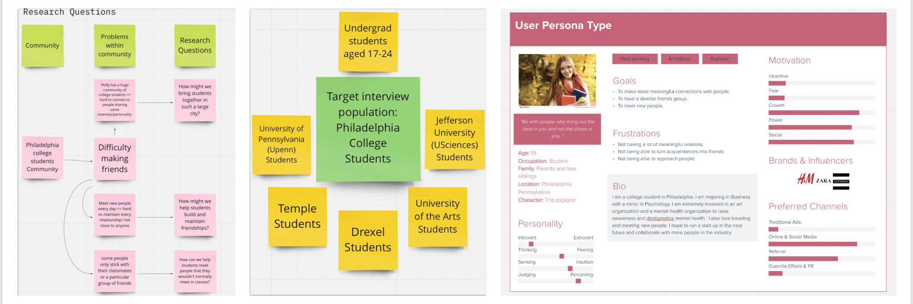
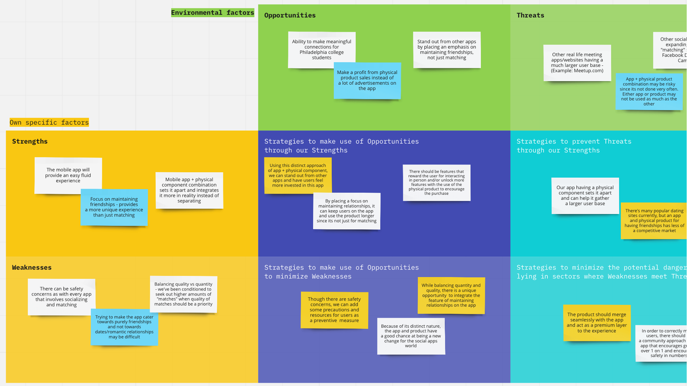
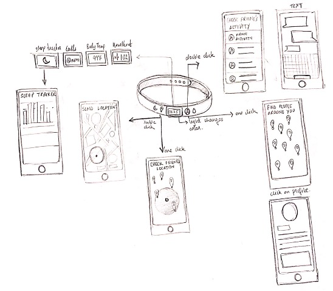
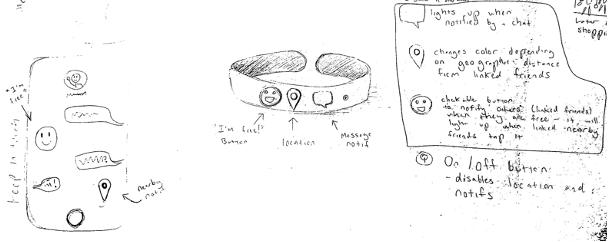
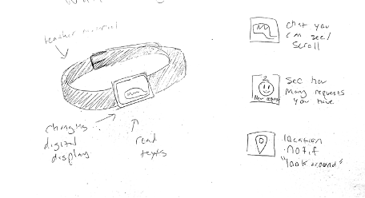
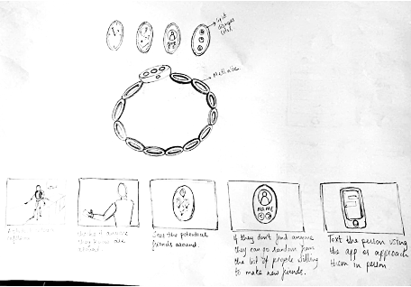
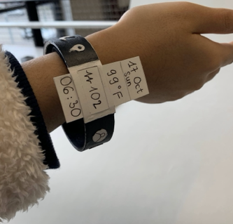
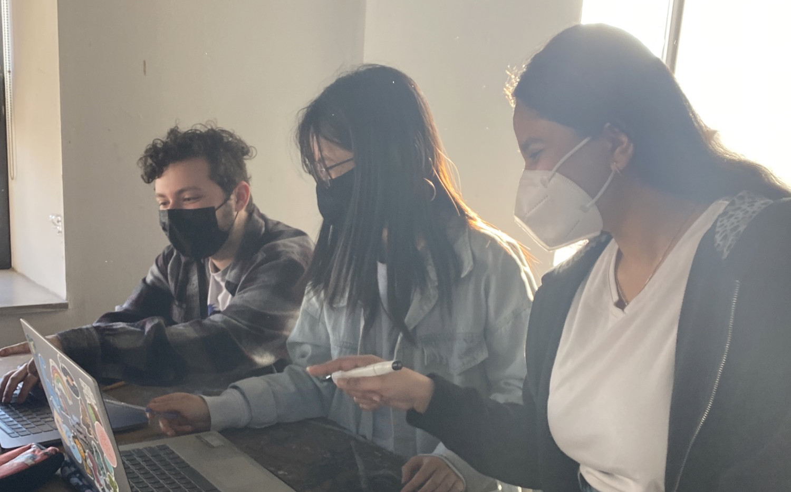

Uni-fy
User Research | UI Design | Product Design
Tools:Figma, Google Forms, Excel and paper prototyping
Created a smart band along with an app to help college students connect with each other and manage relationships.

Problem Statement
College students struggle with converting acquaintances into friends and maintaining lasting relationships with friends due to difficult schedules and a lack of opportunities to connect with students. Unify would aim at helping students navigate their social life more seamlessly and form meaningful bonds easily.
Project Goal
We want to carry out research on the way college students make friends and maintain social relations. We want to understand the obstacles that come in their way to maintain a long lasting friendships. Our product would also help them make friends while helping them navigate their social lives effortlessly.
Research

-A brief 13 question survey.
-Responses from over 25+ Philadelphia undergraduate students.
-Questions involving friendship observations and opinions.
Findings
Friendship information: Moderate difficulty making friends with an acquaintance. Usually meet friends through academic/living/ social settings.
Demographic information: Mostly Drexel Students with an average age range: 18-24.
SWOT Analysis
App Features
- Friendship booster: Advices on how to maintain your friendships, potential topics to talk about, activities to do, friends availability etc.
- Simplistic appearance: Varying colors and designs to suit everyones style.
- Friend reminders: Reminders to connect with friends, suggestions for common availability and recommendations for activities.
- Friendship diary: Note down memories you have with your friends (this will help the app develop the Friendship Booster).
- Friendship status: See how much time you've been spending with friends, and how close to them you are.
- Friend's availability: See when your friends are available and want to hang out.
- Friends profiles: See people's bios, hobbies, and how you get to know them.
- Location: See your friend's location.
Smart Band Features
-Sleep tracker
-Water tracker
-Time display
-Friendship functionalities
-Send location feature
-Check friend activity
-Vitals
-Body Temperature
-Heartbeat
Smart Band Design
   Final Design
Meet the Team
Eli, Kaylie and Vidhi
Resume Previous